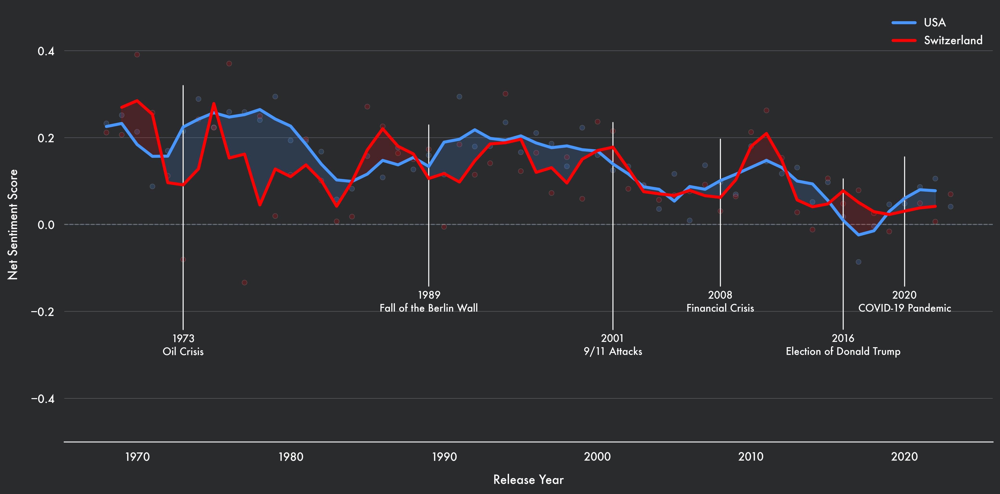
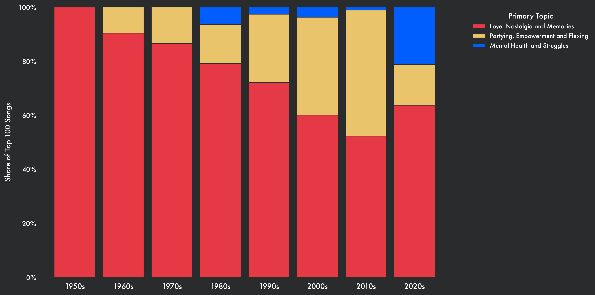
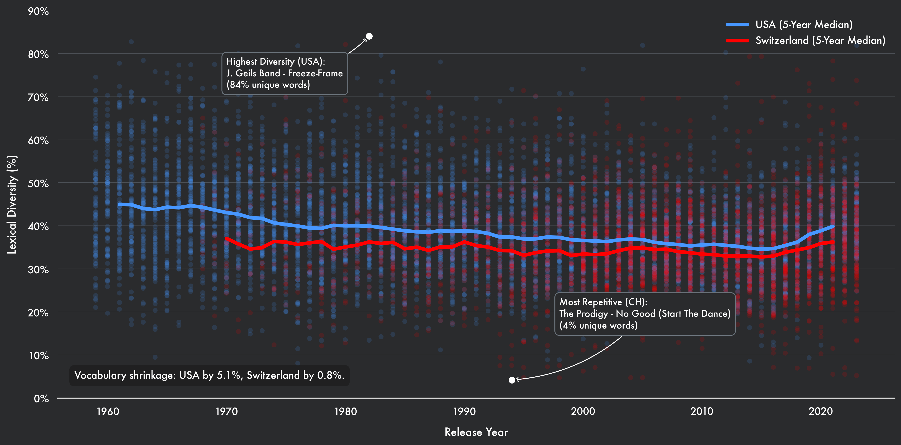
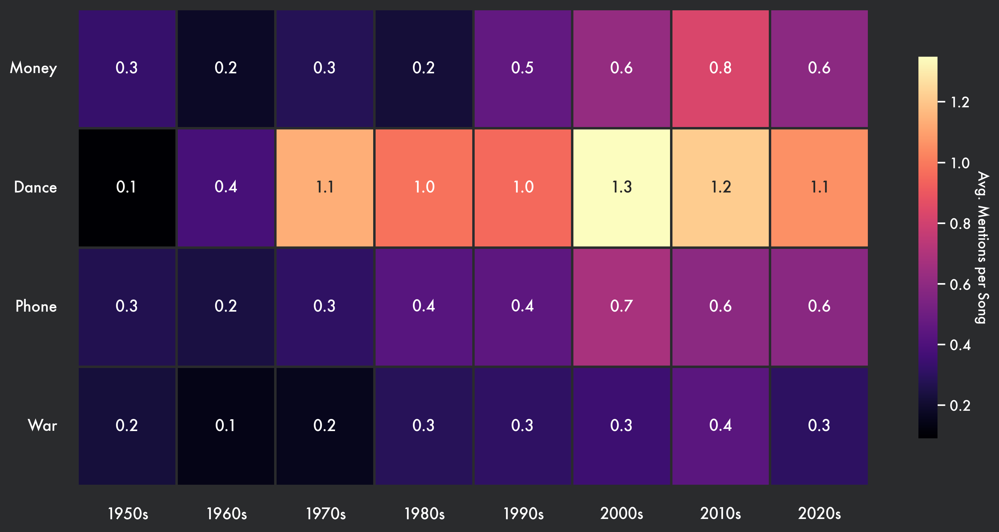

The Lyrical Time Capsule
How AI Reveals the Emotional and Cultural Shifts in Music
Music is a mirror of society. When the world faces crises, do we escape into upbeat anthems, or does our art turn darker? By using Artificial Intelligence to analyze the sentiment, topics, and vocabulary of the most popular songs in the US and Switzerland, we can track the cultural heartbeat of the last five decades.
↓ Scroll down to begin
The Shifting Mood of Music
We start by measuring "Net Sentiment"—the balance between positive and negative language in lyrics. This chart tracks how the general mood has fluctuated, revealing a fascinating synchronicity between the US and Switzerland.

The data uncovers a profound human duality. After profound economic shocks like the 1973 Oil Crisis and the 2008 Financial Crash, we don't see musical despair. Instead, sentiment spikes into aggressive positivity—music becomes a neon-lit refuge, a vehicle for mass escapism. Conversely, in the wake of deep socio-political trauma—such as the 9/11 attacks in 2001 or the polarizing election of Donald Trump in 2016—the musical mood plunges into deep valleys. It seems we use music to dance away our financial anxieties, but we let it weep with us during times of geopolitical dread.
From Romance to More Dance
Beyond the emotional tone, what are artists actually singing about? Looking at the primary topics, the thematic landscape of the charts has undergone a radical transformation.

While classic themes of "Love", "Nostalgia", and "Memories" remain the undisputed bedrock of music, their absolute dominance has been steadily eroding. As the decades progress, romance makes room for the club. We witness a relentless climb in songs about partying and flexing, reaching a euphoric, glitter-drenched peak in the 2010s. However, the data reveals a violent pivot in 2020. As the COVID-19 pandemic silenced dancefloors globally, the party abruptly stopped. In its void, songs exploring mental health and inner struggle experienced an unprecedented surge, shifting the cultural narrative from external validation to profound collective vulnerability.
Is Music Losing its Vocabulary?
There is a common complaint among older generations that modern music is "getting dumber." To test this, I analyzed Lexical Diversity—the ratio of unique words to total words in a song.

The data tells a more nuanced story than the cynics might expect. Yes, there is a steady erosion: from a high of around 45% unique words in the 1960s, vocabulary slowly shrank to a low of roughly 35% by the mid-2010s—the golden age of the repetitive, algorithmic pop hook. Yet, the most fascinating detail is the sudden reversal. In recent years, the ratio rapidly bounces back toward 40%. This unexpected renaissance suggests that listeners are growing fatigued by formulaic repetition, yearning once again for lyrical depth and "smarter" storytelling in their mainstream music.
Cultural Markers: What We Talk About
Finally, we tracked specific "Cultural Markers"—keywords that signal what society prioritizes. This heatmap visualizes the frequency of these words (and their synonyms) over time.

This heatmap acts as a mirror to our shifting societal values. Unsurprisingly, "Money" steadily conquers the lyrical landscape, reflecting the modern rise of hustle culture. The frequency of "Dance" is staggering, exploding by more than tenfold in the 2000s before slightly cooling off. Yet, the data also defies expectations. The word "Phone" barely registers the smartphone revolution, plateauing after a modest doubling in the 2000s—perhaps because technology has become so ubiquitous that it is simply the invisible water we swim in. Most hauntingly, the word "War" remains almost flat. Even during the raging heights of the Vietnam War in the 60s and 70s, music largely ignored the battlefield. It seems that when reality becomes too bleak, the radio is reserved for dreaming.
Conclusion: The Soundtrack of Our Reality
Ultimately, the data reveals that music is far more than just background noise—it is a real-time cultural barometer. We don't just listen to the charts; we use them to process our collective reality. Whether we are dancing away economic anxieties, confronting our mental health during a pandemic, or seeking deeper storytelling after years of formulaic hits, the songs we elevate to the Top 100 are the ultimate reflection of who we are. Music remains our most reliable time capsule, proving that even as our vocabulary shrinks and our topics shift from romance to riches, our fundamental need to soundtrack the human experience remains completely unchanged.
Behind the Data: Methodology
How did I actually measure the "mood" of five decades of music? This project sits at the intersection of cultural history and modern Data Science, leveraging state-of-the-art AI models.
- The Datasets: The US analysis relies on the Billboard Top 100 dataset from Kaggle. For the Swiss charts, I built a custom web scraper to extract the official year-end data directly from hitparade.ch and added the lyrics from genius.com usings it's API.
- Sentiment & Emotion: To calculate the emotional tone, I utilized Hugging Face models. I deployed
cardiffnlp/twitter-roberta-base-sentiment-latestto measure the Net Sentiment (positive vs. negative), andj-hartmann/emotion-english-distilroberta-baseto detect granular emotional states. - Topic Modeling: Instead of manually categorizing thousands of songs, I used Zero-Shot Classification to assign primary narratives to the lyrics, powered by the robust
facebook/bart-large-mnlimodel. - Lexical Extraction: The vocabulary density and cultural marker frequencies were calculated using custom Python scripts and regular expressions (Regex) to map semantic variations of words over time.
AI Transparency
While the creative direction, data curation, and core analytical concepts are entirely human-led, Artificial Intelligence acted as a collaborative assistant.
Specifically, Gemini 3.1 Pro was used to:
- Refine and translate the analytical observations and conclusion into an engaging, journalistic tone.
- Generate the boilerplate HTML, CSS animations, and layout structure.
- Assist in refactoring and troubleshooting the Python code for the charts.
- Assist in creating the project documentation.